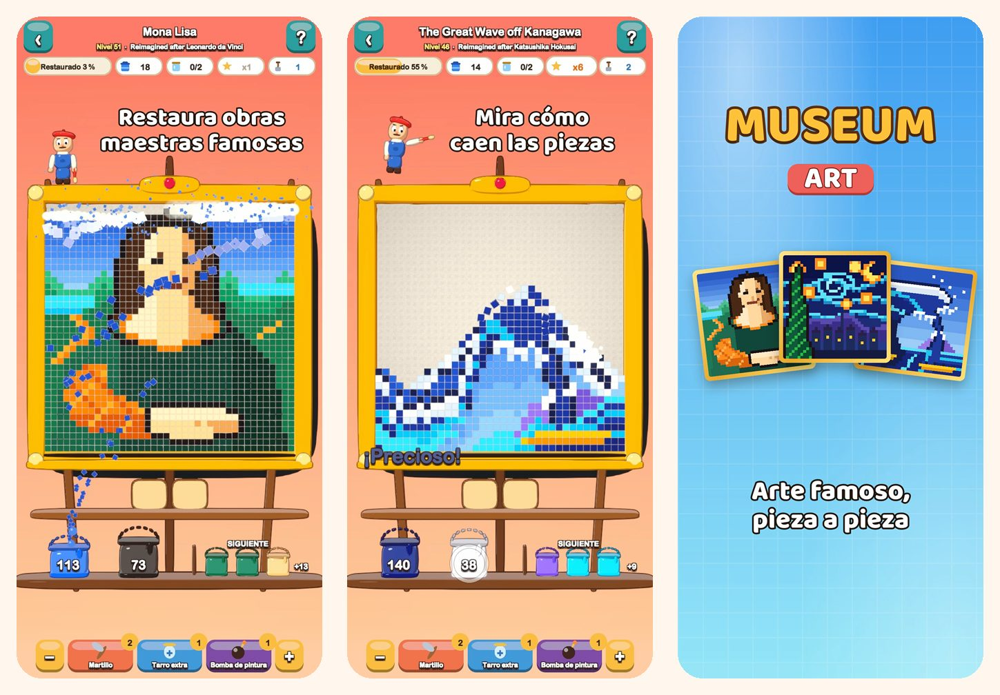

Museum Art
Puzle de colores en pixel art
Toca un color y mira cómo caen las piezas. Restaura 51 cuadros en pixel art, desde la Mona Lisa hasta las calles de Estambul, París, Roma y Nueva York.
Descárgalo en el App Store
Sobre el juego
Cada cuadro de Museum Art está hecho de piezas cuadradas de colores. Retíralas color a color y mira cómo el cuadro vuelve a brillar.
CÓMO SE JUEGA
- Toca una zona de color que toque la fila de abajo, o un cubo de la estantería: las piezas vuelan a su cubo.
- Las piezas de arriba caen como arena y abren nuevas jugadas.
- ¿Aún no hay cubo para un color? Guárdalo en un tarro de la bandeja.
- Cuanto menos uses la bandeja, más estrellas ganarás.
51 CUADROS PARA RESTAURAR
- Escenas alegres y fáciles para empezar: un globo aerostático, un velero, un gato y un faro.
- Naturaleza: cumbres nevadas, un lago de montaña, cerezos en flor y un desierto al atardecer.
- Una vuelta al mundo por Estambul, París, Roma y Nueva York.
- La Cámara de los Maestros: La gran ola, La noche estrellada, Los nenúfares, La lechera, Impresión, sol naciente y la Mona Lisa, reinventados en pixel art.
RELAJADO Y JUSTO
- Todos los niveles se pueden resolver sin potenciadores, y reintentar es gratis.
- Potenciadores para los momentos difíciles: Martillo, Tarro extra y Bomba de pintura.
- Amplía los detalles cuando quieras.
- Una curiosidad sobre cada cuadro.
- Juega en 19 idiomas.